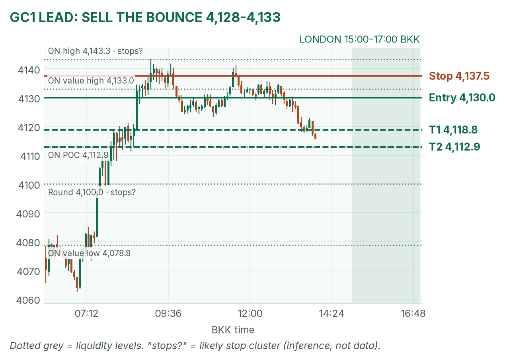
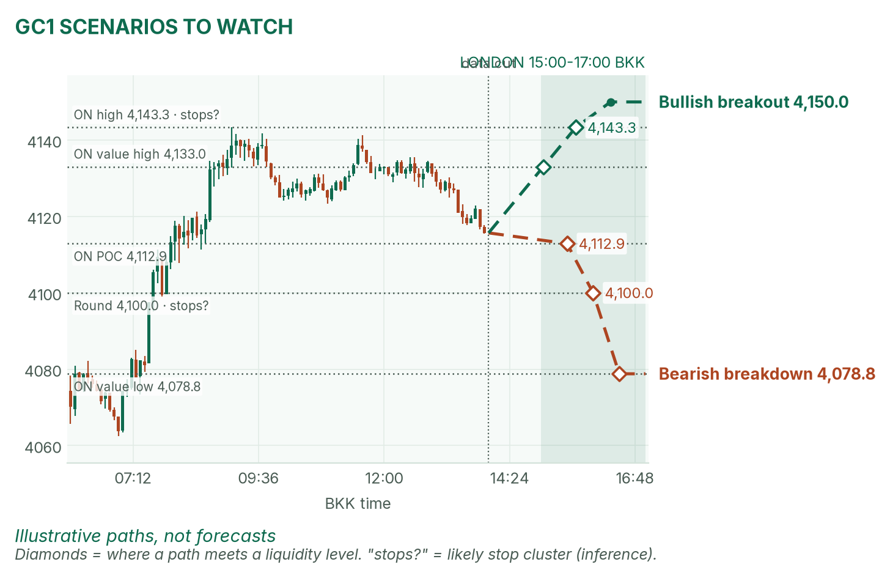
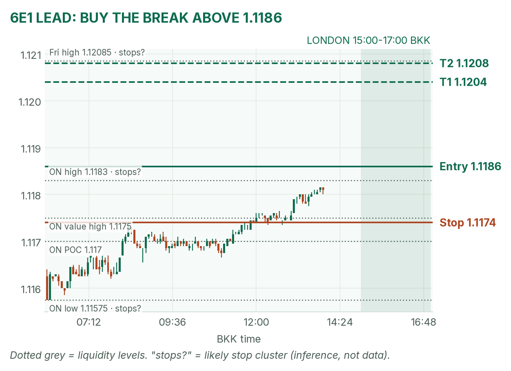
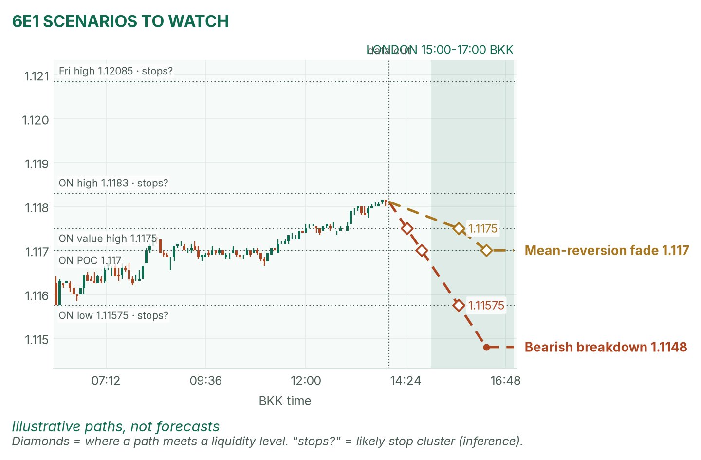

Gold is sliding back to its busiest price. The euro presses its overnight high.
Window 15:00–17:00 BKK. Data cut 14:00 BKK: GC 4,115.7, 6E 1.1181 (TopstepX Dec contracts). Levels only, flat by 17:00. Ideas, not advice. April's pre-London brief (12:57 BKK) was read.
Summary
GC: sell a bounce into 4,128–4,133, stop 4,137.5, targets 4,118.8 and 4,112.9. About 45% once filled.
6E: buy a break above 1.1186, stop 1.1174, targets 1.1204 and 1.1208. About 42%.
Sentix at 15:30 closes the opening range. No entries 15:25–15:32.
The market story
Gold jumped 4.6% last week and April has it up 1.34% today, but it peaked at 4,143.3 at 09:06 and has slipped about 28 points since. The dollar is softer (DXY 102.11, −0.18%), which helps the euro. The 10-year US yield (what the government pays to borrow for ten years) is 4.868%. Rising yields make borrowing dearer and weigh on gold, which pays no interest.
Friday's payrolls beat forecasts (+165,000 against about 59,000), so December Fed hike odds are about 81%. US CPI (October inflation) is Tuesday at 20:30, and Fed speakers come tonight. Into that, I expect ranges and quick snap-backs, not trends.
News (BKK)
Time
Release
Forecast
Prior
Read
15:30
Eurozone Sentix investor confidence (Nov)
2.1
2.7
Above 2.1: 6E bid, breakout favoured. Below: euro stalls, fade the high. The usual miss is about 3 points.
Also: Eurogroup and ECOFIN meetings all day (headline risk). Bowman 20:40 is outside the window. No-trade zone: 15:25–15:32. Sources: Investing.com, Forex Factory.
Levels to watch
Level
GC
6E
Overnight high (since 06:00)
4,143.3
1.1183
Overnight value high
4,133.0
1.1175
Overnight POC (the busiest price)
4,112.9
1.1170
Overnight value low
4,078.8
1.11625
Overnight low
4,062.5
1.11575
Friday high / low
4,090.7 / 4,035.1
1.12085 / 1.1147
Gold (GC1)
Bias: range-bound with a downward lean. The weekly rally is big, but the last 28 points have been lower highs. The rule for London gold: mark the 15:00–15:30 range, and fade its edges back to the POC. The range does not exist yet, so I anchor to levels that do.
The trade: mean-reversion sell
Entry
4,128–4,133 (plan 4,130), after 15:32, on a failed push. The zone sits under the 4,133.0 value high and the 12:00–13:00 highs (about 4,135).
Stop
4,137.5, above those 4,135 highs and the value high
~45%, an estimate. Basis: in 42 sessions (Aug–Oct) GC London ranges mostly failed, so fading them worked; not statistically significant.
Why: price is already below that 4,135 area, and the target is a level where a lot of business was done. If the range forms far from these levels, no trade. April: partly agrees (a hawkish Fed could cap gold; the brief does not call a fade).

GC 5-minute bars since Sunday's 06:00 reopen. "Stops?" marks likely stop clusters (my inference).

Illustrative paths, not forecasts.
Scenarios to watch
Bearish breakdown: a 15m close below 4,112.9 after 15:32. Aims for 4,100, then 4,078.8.
Bullish breakout: a 15m close above 4,143.3 that holds. Aims for 4,150, a round number.
Euro (6E1)
Bias: mildly bullish. The euro rose from 1.11575 to 1.1183, now sitting at the overnight high with the dollar softer. The 6E London rule is to trade breakouts of the 15:00–15:30 range. Sentix lands on the last minute of that range, so wait for it.
The trade: bullish range breakout
Entry
Buy stop 1.1186, above the 1.1183 overnight high. If the range high is higher, use one tick above it and keep the stop distance.
Stop
1.1174, under the 1.1175 value high
Targets
1R partial 1.1198 · T1 1.1204 (1.5R) · T2 1.1208 (1.8R), just under Friday's high 1.12085
Cancel
5m close below 1.1174, or no break by 16:30
Probability
~42%, an estimate. Basis: 6E London range breakouts averaged +0.31R over 26 sessions; not statistically significant.
Why: trend, dollar and the range rule agree, and the stop sits behind a real level. A break that fails back inside the range is a loser; take the stop. April agrees: the euro is pressing its session top.

6E 5-minute bars since 06:00. The entry sits just above the overnight high.

Illustrative paths, not forecasts.
Scenarios to watch
Bearish breakdown: a weak Sentix, then a 5m close below the range low and 1.11575. Aims for 1.1148, Friday's low area.
Mean reversion: a stall at 1.1183 that fails. Aims for the value high 1.1175, then the POC 1.1170.
NQ (not traded): +0.22% per April, gave back about 175 points from its 09:33 high; CPI is the risk.
Before you click
ORB bases. GC London: 15:00–15:30 range, fade to POC. GC NY: 19:20 COMEX open until a 2-minute candle's volume drops below half the first two's average, fade to POC. 6E London: 15:00–15:30 range, trade breakouts. NQ NY: 21:30–21:35 range, trade breakouts.
Checklist. 1) Room to today's max loss? 2) Within daily rules? 3) No release within 30 minutes? 4) Agrees with the bias? 5) At a marked level? 6) Setup tagged? 7) Entry, stop, 1R partial, target set? 8) Calm, not chasing?
Reset (60 seconds). Hands off the mouse. Breathe in 4, hold 4, out 6, five times. Name the feeling in one word. Say the plan aloud. "Eager" or "frustrated"? Wait 5 minutes.
TopstepX Dec bars, read-only. Profiles from 1-minute bars; overnight starts 06:00 BKK. Figures for DXY, yields, Fed odds: April's brief. Forecasts: Investing.com.